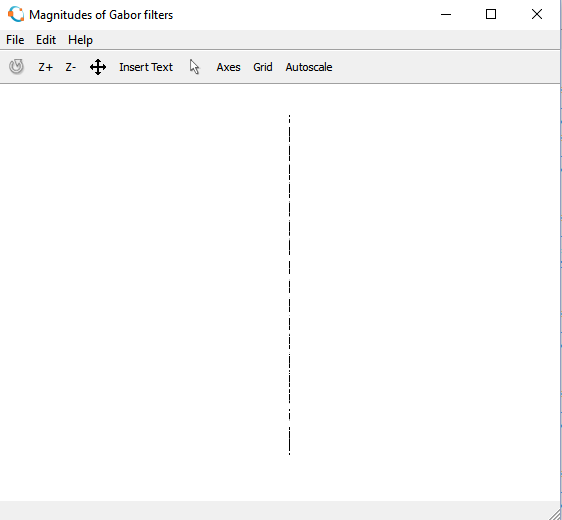

Trainable COSFIRE filters for vessel delineation with application to retinal images
W czasie pierwszego laboratorium zajęłyśmy się analizowaniem obrazów przy użyciu filtrów Gabora.
Filtry Gabora to filtry pasmowe[1], znajdujące zastosowanie w analizie obrazu do wydobywania określonych cech obrazu oraz ich segmentacji. Ekstrakcja
pozwala na zmniejszenie ilości danych,potrzebnych reprezentacji obrazu.
Wykorzystywane są też między innymi do analizy tekstur, a także do wykrywania krawędzi.
Stosując pojedynczy filtr Gabora można przefiltrować obraz z dobranym pewnym zakresem częstotliwości. Może być realizowany w dziedzinie częstotliwości, a także w dziedzinie przestrzennej.
W dziedzinie przestrzennej stanowi sinusoidę o określonej częstotliwości i orientacji, modulowaną funkcją Gaussa.
Można to wyrazić za pomocą wzoru
g(x,y)= s(x,y)*w(x,y)
gdzie s(x,y) to zespolona sinusoida,
w(x,y) to funkcja Gaussa, nazywana obwiednią
Natomiast jeśli chodzi o realizację filtru Gabora w dziedzinie częstotliwości, transformacja Fouriera umożliwia przeniesienie funkcji Gabora z dziedziny przestrzennej
do dziedziny częstotliwości
Filtry Gabora, przy zmieniających się parametrach orientacji i częstotliwości, generują zespół filtrów, nazywany bankiem filtrów. Takie działanie pozwala na przetworzenie obrazów.
Po przygotowaniu banków filtrów Gabora można dokonać analizy obrazu,składającego się z różnych typów tekstur. W obrazie, będącym odpowiedzią filtru o danych parametrach, można
wyróżnić teksturę o specyficznych właściwościach. Po dalszej obróbce, progowaniu, w efekcie można otrzymać wysegmentowany obraz.
W czasie laboratorium użyłyśmy kodów ze strony , poniższego zdjecia-również z tej strony oraz 2 zdjęć pobranych z google grafika: kolorowej róży oraz "zabawnego" zdjęcia rentgen.

Inputs:
img : Matrix of the input image
gaborArray : Gabor filters bank created by the function gaborFilterBank
d1 : The factor of downsampling along rows.
d2 : The factor of downsampling along columns.
Output:
featureVector : A column vector with length (m*n*u*v)/(d1*d2).
This vector is the Gabor feature vector of an
m by n image. u is the number of scales and
v is the number of orientations in 'gaborArray'.
Sample use:
featureVector = gaborFeatures(img,gaborArray,4,4);

Niestety obrazy są właściwie nieczytelne.
Testowaniu poddałyśmy różę oraz zdjęcie rentgenowskie.
Podałyśmy domyślne parametry,być może były one za duże dla tych obrazów, przez co jest większa liczba projekcji kosztem widoczności obrazu.
Ponadto, obraz "featureVector", przy parametrach d1:4, d2:4 był zupełnie niewidoczny.
Po zmianie wartości parametrów otrzymałyśmy następujące wyniki:
gaborArray = gaborFilterBank(1,1,9,9);
featureVector = gaborFeatures(img,gaborArray,30,30);

gaborArray = gaborFilterBank(1,1,15,15);
Wyniki są, w porównaniu z poprzednimi, zadowalające.
Bez znajomości obrazu wejściowego, można określić, co znajduje się na obrazach po filtrowaniu.
Na podstawie otrzymanych obrazów można potwierdzić,że filtry Gabora mogą być stosowane do detekcji krawędzi. Jednak istnieją prostsze metody, dzięki którym może być
spełniona podobna funkcjonalność.
Należy jednak dobrać odpowiednie wartości parametrów, by obraz był czytelny. Dzięki stosowaniu powyższych funkcji, można obserwować obraz w różnych orientacjach i skalach.